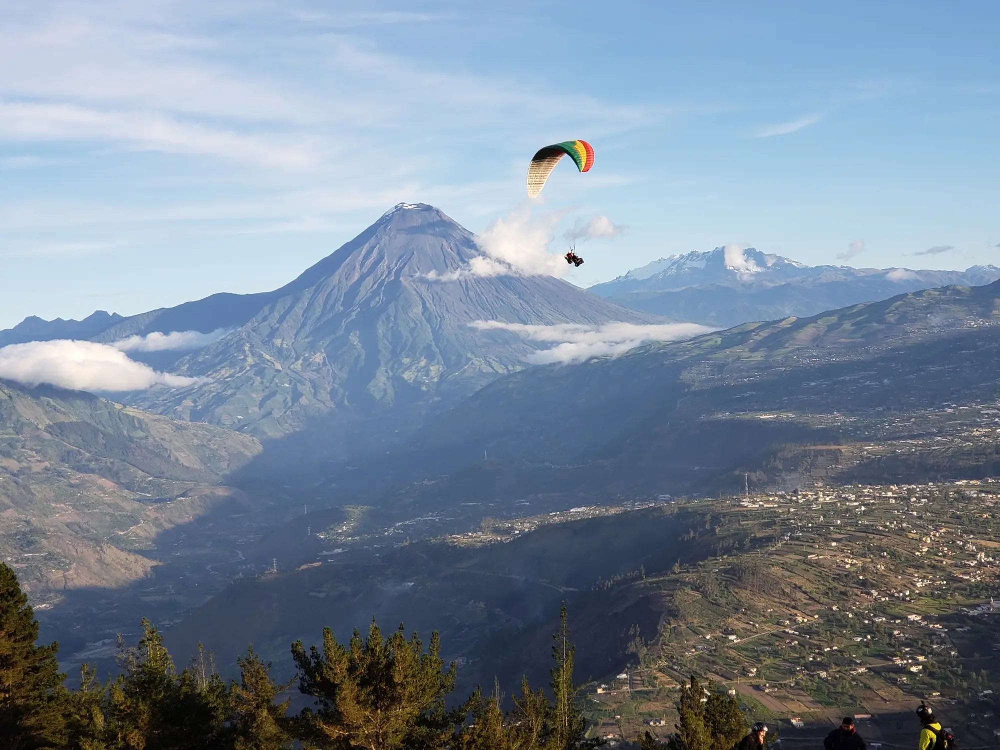
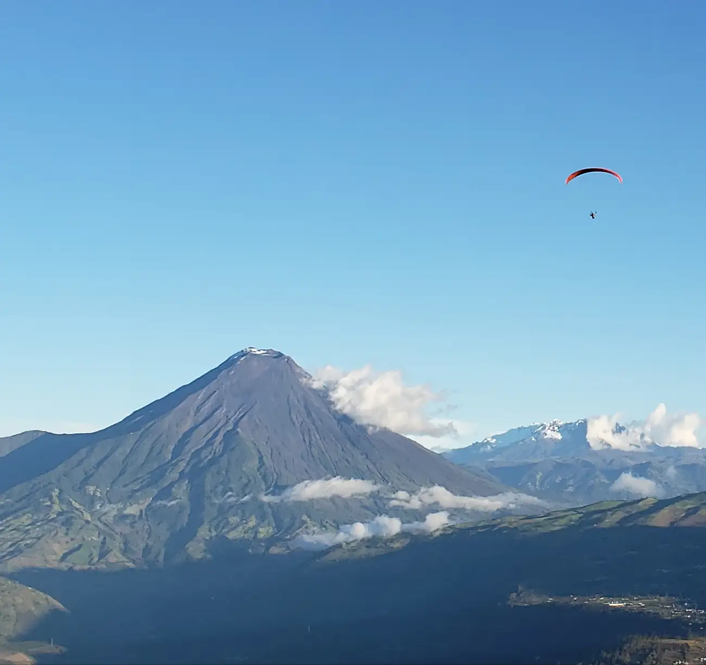
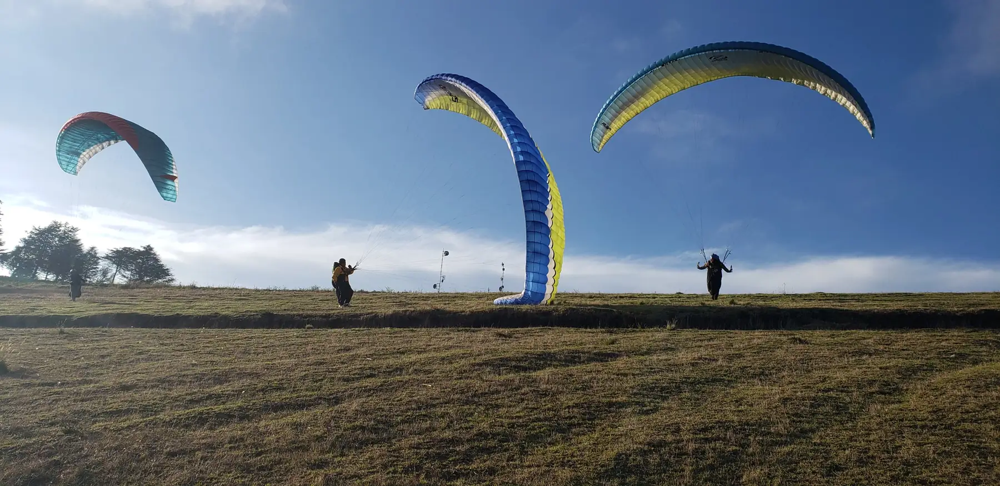

Vuela sobre el Tungurahua Fly over Tungurahua
Despega desde nuestro campo en el Cerro Niton, a 3.000 metros, y vuela sobre los valles de Patate y Pelileo con el volcán de frente. Pilotos con más de 25 años en el aire de Tungurahua.Take off from our own field on Cerro Niton, 3,000 m above sea level, and fly over the Patate and Pelileo valleys facing the volcano. Pilots with more than 25 years in Tungurahua's air.
- +25 años25+ years
- volando en Tungurahuaflying in Tungurahua
- 3.000 msnm3,000 m
- despegue en el Cerro Nitontakeoff altitude at Cerro Niton
- ≈15 min
- en el aire con tu pilotoin the air with your pilot
- 7.000 m²
- de campo propio para despegar y aterrizarof our own field to take off and land
Más de 25 años volando en TungurahuaMore than 25 years flying in Tungurahua
Flyniton es una operadora de turismo de aventura y escuela de parapente con oficina en Baños de Agua Santa. Volamos desde el Cerro Niton, en Pelileo, donde tenemos un campo de césped natural propio para despegar y aterrizar en el mismo lugar.Flyniton is an adventure tour operator and paragliding school with an office in Baños de Agua Santa. We fly from Cerro Niton in Pelileo, where we own a natural grass field to take off and land in the same place.
Nuestros pilotos e instructores conocen el aire del Niton: leen el viento, deciden cuándo se vuela y cuándo no, y te acompañan desde la charla de seguridad hasta que tus pies vuelven a tocar el césped.Our pilots and instructors know the air over Niton: they read the wind, decide when it is safe to fly and when it is not, and stay with you from the safety briefing until your feet touch the grass again.
Campo propio de 7.000 m²Our own 7,000 m² field
Despegue y aterrizaje en el mismo lugar, con el desnivel ideal.Takeoff and landing in the same place, on an ideal slope.
Equipos homologados EN / DHVEN / DHV certified gear
Revisados antes de cada jornada y en taller certificado cada año.Checked before every flying day and by a certified workshop every year.
Pilotos certificadosCertified pilots
Un pasajero por piloto en cada vuelo, con radio al equipo en tierra.One passenger per pilot on every flight, with a radio link to the ground crew.
Cuidamos el Niton.We look after Niton. No usamos agroquímicos en el campo, recogemos los residuos de cada grupo, limitamos los vehículos que suben y no levantamos construcciones que cambien el paisaje.No agrochemicals on the field, we pick up every group's waste, we limit the vehicles that drive up and we build nothing that changes the landscape.


Tu tarde en el Cerro NitonYour afternoon on Cerro Niton
Vuelas sentado delante de un piloto certificado que controla el parapente todo el tiempo. No necesitas experiencia: escuchas la charla, das unos pasos en el césped y el viento hace el resto.You fly seated in front of a certified pilot who controls the wing the whole time. No experience needed: listen to the briefing, take a few steps on the grass and the wind does the rest.
Consultar tarifa y cupoCheck price and availabilityQué incluyeWhat's included
- Recogida y retorno a tu hotel o agencia en BañosPickup and drop-off at your hotel or agency in Baños
- Charla técnica con video y práctica en simuladorSafety briefing with video and simulator practice
- Transporte turístico Baños – Cerro Niton – BañosTourist transport Baños – Cerro Niton – Baños
- Vuelo de unos 15 minutos con piloto certificadoA flight of about 15 minutes with a certified pilot
- Casco, arnés y parapente homologadosCertified helmet, harness and wing
- Soportes para grabar con tu celular, cámara o GoProMounts to film with your phone, camera or GoPro
Qué llevarWhat to bring
Ropa abrigada y zapatos deportivos o de media montaña. No sandalias ni tacones: en el despegue das unos pasos corriendo sobre el césped.Warm clothes and sports or hiking shoes. No sandals or heels: you take a few running steps on the grass at takeoff.
Itinerario desde Baños de Agua SantaItinerary from Baños de Agua Santa
Te recogemos en tu hotel, agencia u operadora en Baños.We pick you up at your hotel, agency or tour operator in Baños.
Charla técnica y de seguridad en nuestra oficina, con video y práctica en simulador de despegue y aterrizaje.Technical and safety briefing at our office, with a video and takeoff and landing practice on a simulator.
Salida en transporte turístico hacia el Cerro Niton, en Pelileo.Departure by tourist transport to Cerro Niton, in Pelileo.
Llegada a la zona de vuelo, bienvenida y análisis del viento y las condiciones del día.Arrival at the flying site, welcome and a check of the wind and the day's conditions.
Vuelos hasta las 18:30.Flights until 18:30. Cada vuelo dura unos 15 minutos sobre los valles de Patate y Pelileo, con vista al Tungurahua.Each flight lasts about 15 minutes over the Patate and Pelileo valleys, facing Tungurahua.
Hora máxima de retorno hacia Baños.Latest departure back to Baños.
Llegada a Baños y entrega en tu hotel, agencia u operadora.Arrival in Baños and drop-off at your hotel, agency or tour operator.
- Desde 8 añosFrom age 8
- Menores con autorización escrita de su representante legal.Minors need written permission from a parent or legal guardian.
- 40–100 kg
- Peso del pasajero, por el límite técnico del equipo biplaza.Passenger weight, the technical limit of the tandem gear.
- Hasta 70 añosUp to age 70
- Edad recomendada, según tu condición física.Recommended age, depending on your fitness.
- Sin experienciaNo experience
- Solo debes poder caminar y mantenerte de pie en el despegue.You only need to walk and stand during takeoff.
Por seguridad no pueden volar personas con epilepsia no controlada, problemas cardíacos graves, fracturas recientes, embarazo o condiciones que impidan usar el arnés. Si tienes dudas, te pediremos un certificado médico. No se vuela bajo efectos del alcohol.For safety, people with uncontrolled epilepsy, serious heart conditions, recent fractures, pregnancy or any condition that prevents wearing the harness cannot fly. If in doubt we will ask for a medical certificate. No flying under the influence of alcohol.
¿Y si el clima no acompaña?What if the weather doesn't cooperate?
Volamos con días claros o parcialmente nublados y viento del sureste entre 15 y 30 km/h. Con lluvia, despegue cerrado por nubes, viento fuerte o cumulonimbos, no se vuela.We fly on clear or partly cloudy days with south-east wind between 15 and 30 km/h. With rain, cloud on the takeoff, strong wind or cumulonimbus, we don't fly.
- Esperamos una ventana de buen tiempo el mismo día.We wait for a weather window the same day.
- Si no mejora, reprogramamos tu vuelo sin costo.If it doesn't clear, we reschedule at no cost.
- Si no puedes otro día, te devolvemos el valor completo.If you can't make another day, you get a full refund.
Pronóstico en el Niton, 15:00 a 18:00Niton forecast, 15:00 to 18:00
- Cargando el pronóstico…Loading the forecast…
Orientativo: es un modelo meteorológico, no una medición en el campo. El piloto decide si se vuela. Datos deFor guidance only: this is a weather model, not a reading from the field. The pilot decides whether we fly. Data from Open-Meteo.
Mira dónde vas a volarSee where you'll fly
Desde Baños, a 1.820 m, subimos unos 25 km hasta el Cerro Niton, a 3.000 m. Despegas sobre los valles de Patate y Pelileo, con el Tungurahua de frente, y aterrizas en el mismo campo.From Baños at 1,820 m we drive about 25 km up to Cerro Niton at 3,000 m. You launch over the Patate and Pelileo valleys, facing Tungurahua, and land on the same field.
- Zona de vuelo aproximadaApproximate flying area
- Ruta por carretera, unos 40 minRoad route, about 40 min

No se pudo cargar el mapa en este dispositivo. Usa los enlaces de «Cómo llegar».The map couldn't load on this device. Use the directions links instead.
Aprende a volar tu propio parapenteLearn to fly your own paraglider
Curso teórico y práctico a la vez: entiendes la teoría y la llevas al campo en la misma jornada, con el equipo de la escuela y un instructor a tu lado.Theory and practice side by side: you learn the theory and take it to the field the same day, with school gear and an instructor beside you.

Cómo inscribirteHow to enrol
EscríbenosMessage us
Te contamos las próximas fechas, el valor del curso y el número estimado de sesiones.We'll tell you the next dates, the course price and the estimated number of sessions.
Ficha y contratoForm and contract
En nuestra oficina de Baños llenas la ficha de inscripción y firmas el contrato del curso. Los menores de edad firman junto a su padre, madre o representante.At our Baños office you fill in the enrolment form and sign the course contract. Minors sign together with a parent or guardian.
A entrenarStart training
Teoría y práctica en paralelo, desde el manejo de la vela en tierra hasta tus primeros vuelos.Theory and practice in parallel, from handling the wing on the ground to your first flights.
La escuela poneThe school provides
- Instrucción teórica y práctica simultáneaTheory and practical instruction at the same time
- Parapente, arnés, casco y radio para las prácticasWing, harness, helmet and radio for practice
- Calidad garantizada de instrucción y equiposGuaranteed quality of instruction and gear
Lo que te pedimosWhat we ask of you
- Cédula o pasaporte, fecha de nacimiento, peso, estatura, tipo de sangre y datos de contactoID or passport, date of birth, weight, height, blood type and contact details
- Llegar a cada sesión sin alcohol ni drogasCome to every session free of alcohol and drugs
- Cuidar el equipo que te prestamos: daños o pérdidas corren por tu cuentaLook after the gear we lend you: damage or loss is your responsibility
Revisamos todo antes de despegarWe check everything before takeoff
Nuestro plan de operación fija qué se revisa y cada cuánto. El piloto tiene la última palabra: si el aire no es seguro, no se vuela.Our operating plan sets what gets checked and how often. The pilot has the final word: if the air isn't safe, we don't fly.
Cada jornadaEvery flying day
- Tela, líneas, maillones y mosquetonesFabric, lines, maillons and carabiners
- Arneses de piloto y pasajero, hebillas y cascosPilot and passenger harnesses, buckles and helmets
- Altímetro, variómetro y radioAltimeter, variometer and radio
- Zona de despegue y aterrizajeTakeoff and landing area
Cada mesEvery month
- Costuras y revestimiento del parapenteWing seams and cloth
- Desgaste y simetría de las líneasLine wear and symmetry
- Todos los conectores metálicosAll metal connectors
- Paracaídas de emergencia y registro de horas de vueloReserve parachutes and flight-hour log
Cada añoEvery year
- Porometría de la vela en taller certificadoWing porosity test at a certified workshop
- Revisión técnica de arneses en taller autorizadoHarness inspection at an authorised workshop
- Renovación de certificados de aeronavegabilidadAirworthiness certificates renewed
- Paracaídas de emergenciaReserve parachute
- Uno por piloto, revisado al menos cada 6 meses.One per pilot, repacked at least every 6 months.
- Radio con tierraRadio to the ground
- El piloto se comunica con el equipo en tierra durante todo el vuelo.The pilot stays in contact with the ground crew for the whole flight.
- Doble chequeo del arnésHarness double-check
- El ajuste se verifica antes de caminar al despegue.The fit is checked before walking to takeoff.
- Botiquín en el campoFirst-aid kit on site
- En la zona de despegue y aterrizaje, con protocolo ECU 911.At the takeoff and landing area, with an ECU 911 emergency protocol.
Equipos importados BGD, con asesoría de pilotosImported BGD gear, chosen with pilots
Somos importadores oficiales de BGD (Bruce Goldsmith Design). Marca lo que te interesa y te enviamos cotización y catálogo según tu nivel, tu peso y el tipo de vuelo que haces.We are official importers of BGD (Bruce Goldsmith Design). Pick what you're interested in and we'll send you a quote and catalogue for your level, your weight and the kind of flying you do.
Marca uno o más equipos para armar tu cotización.Select one or more items to build your quote.
Pedir cotización y catálogoRequest quote and catalogueAsí se ve desde el NitonThe view from Niton
Fotos de nuestros vuelos y alumnos. Hay más videos enPhotos from our flights and students. More videos on Instagram yand TikTok.
Reserva tu vueloBook your flight
Escribe tus datos y abrimos WhatsApp con el mensaje listo. Tú decides cuándo enviarlo.Fill in your details and we'll open WhatsApp with the message ready. You decide when to send it.
- 098 803 0968
Desde el exterior: +593 98 803 0968From abroad: +593 98 803 0968 - Teléfono oficinaOffice phone
- (03) 274 2197
- Oficina y punto de salidaOffice and meeting point
- Pasaje Enrique Mideros y Calle Ambato, Baños de Agua Santa
Ver en el mapaView on map - Zona de vueloFlying site
- Cerro Niton, Pelileo, 3.000 msnmCerro Niton, Pelileo, 3,000 m
1°17′10″ S, 78°32′38″ W
Cómo llegarGet directions - Tour tándemTandem tour
- Salida 14:30 desde Baños, regreso 19:15, según el clima. ¿Estás en Ambato o Pelileo? Escríbenos y coordinamos.Leaves Baños at 14:30, back at 19:15, weather permitting. Staying in Ambato or Pelileo? Message us and we'll arrange it.